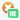

بعد از نصب افزونه آیکون افزونه در کنار نوار آدرس قابل مشاهده خواهد بود. آیکون برنامه برای هر زبانه و سایتی که در آن زبانه بارگزاری شده است به صورت خودکار تغییر میکند. این آیکون در صورت داخلی بودن سایت به آیکون تیک سبز رنگ و برای سایتهای با ترافیک بینالملل به یک ضربدر نارنجی تغییر میکند.
بعد از نصب یا فعال سازی افزونه باید صفحه سایت را رفرش (بارگذاری مجدد) کنید تا افزونه برای آن صفحه فعال شود.
همچنین میتوانید با راست کلیک بر روی لینکهای درون صفحه و کلیک روی گزینه "بررسی لینک" از داخلی بودن لینک دانلود، ویدئو و عکس مطمئن شوید. پس از کلیک نتیجه آن روی یک نشان زیر آیکون افزونه با کلمه ir  برای لینکهای داخلی نمایش داده میشود.
این نشان بعد از چند ثانیه محو میشود.
درصورتی که مایل نیستید افزونه به طور خودکار لینکها را بررسی کند می توانید بر روی آیکون برنامه راست کلید کنید و منوی this can read and change site data گزینه when you click the extension را انتخاب کنید. با این کار در هر سایتی که مایل بودید از داخلی بودن آن آگاهی یابید کافیست روی آیکون افزونه کلیک کنید تا دامنه سایت را بررسی کند.
این افزونه آفلاین عمل میکند و به هیچ سروری متصل نیست و دادههایی که بررسی میشود به خارج از مرورگرتان ارسال نخواهد شد. سورس افزونه روی گیتهاب قرار دارد.